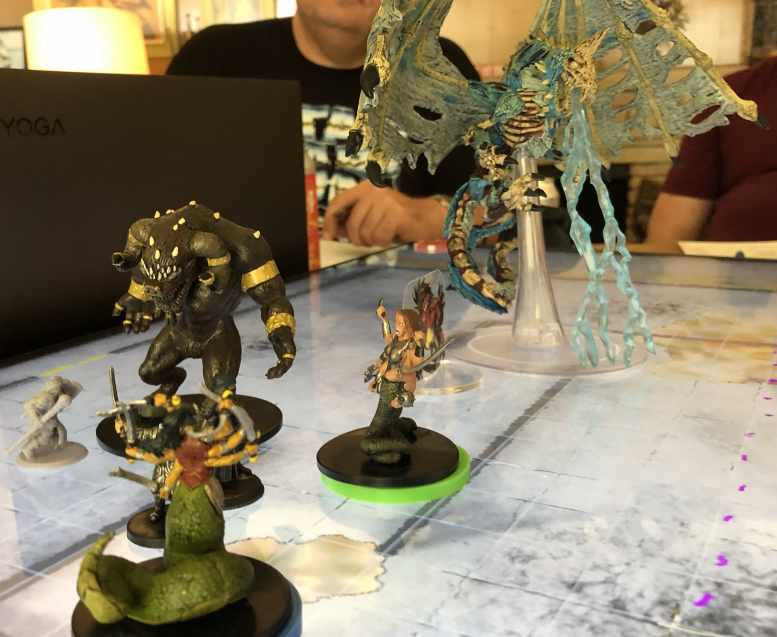
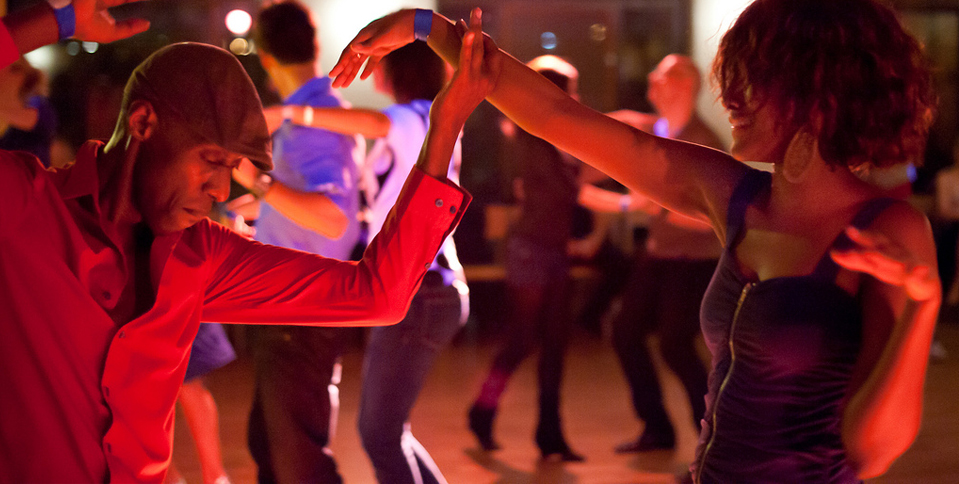
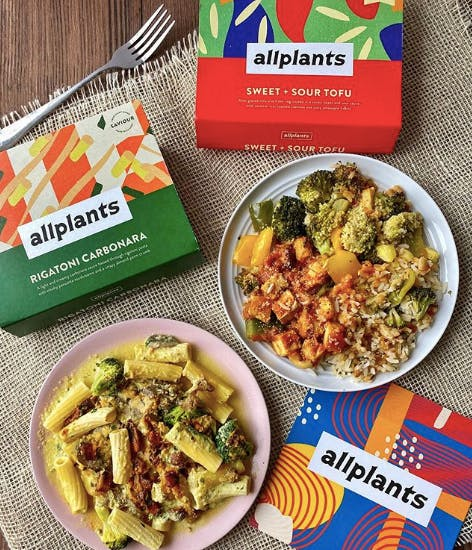
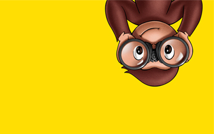

Liv is like a
box of chocolates
During the course, you are likely to discover a few things about me
Martina was here
Here are some hobbies of mine
- Dungeons and Dragons RPG sessions
- PC Gaming
- Inside Rowing
- Healthy Eating
- Latin Ball room
- Hiding a secret stash of chocolate from my partner



You will probably never catch me doing..
- drunk in Leeds city centre
- at a steak house since I'm mostly veggie
- holding a spider, no way ever
Now the big question, what are Liv's top 5 favourite things?
Click here to find out!
